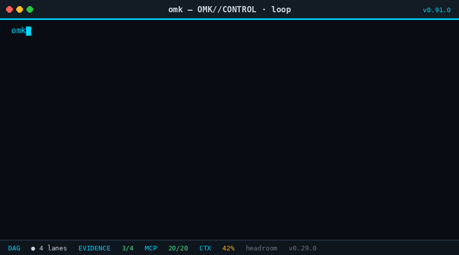
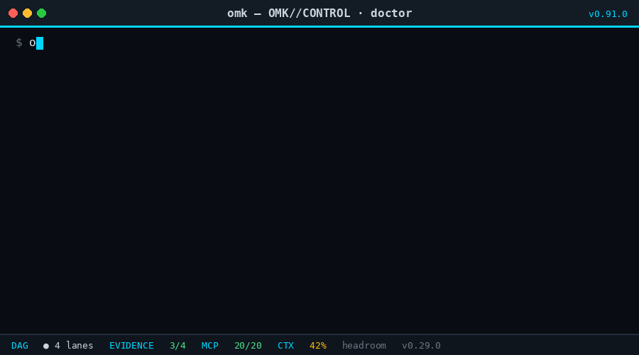
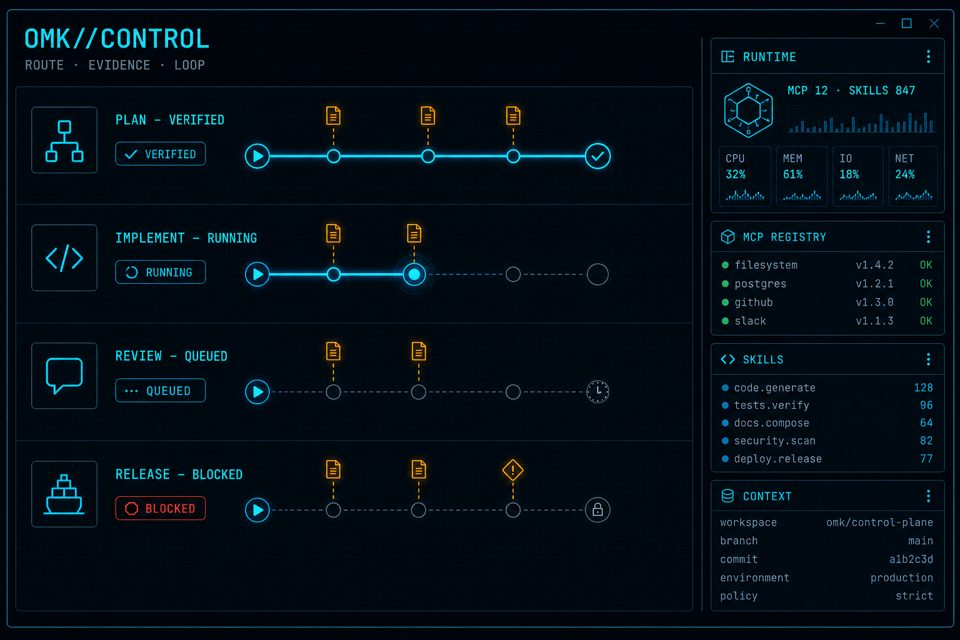

build-harness-graph.mjs
1421 nodes · 2065 edges
open-multi-agent-kit · v0.95.1
OMK is a provider-neutral coding agent and multi-agent control plane. Turn a goal into bounded DAG lanes, block “done” without fresh evidence, and keep every run replayable — for Codex, Claude Code, OpenCode, and local models.
Ship harness-graph health gate with CI and scorecard.
build-harness-graph.mjs
1421 nodes · 2065 edges
graph_analyze.py
bipartite SPOF · communities
health_gate.py --json
waiting fresh evidence
SCORECARD.md
96/100 · write receipt
$ python3 .omk/harness-graph/health_gate.py --json { "status": "PASS", "dead_skills": 0, "dead_hooks": 0 $ npm run check ✓ release surface OK · shrinkwrap OK · tsgo clean
Routes across models without rewriting the control plane.
Product
The same shape as a modern agent IDE home: clear job-to-be-done, a live workspace, and short paths from install to first verified run.
Parallel lanes
Goals become a DAG. Each lane gets resource claims and write ownership so agents stop overwriting each other mid-flight.

Evidence gate
Acceptance predicates block completion until commands leave fresh receipts. Chat claims stay labeled unverified.
Provider-neutral
Codex today, Claude tomorrow, local for air-gap. The evidence model does not change with the vendor.
Session recovery
Durable session state and repair keep long orchestration jobs recoverable instead of restarting from zero.

How it works
OMK decomposes work into a bounded DAG with owned paths and stop predicates.
Skills, hooks, and MCP tools route per lane. One writer per mutable surface.
Completion waits on fresh command output, tests, and health checks — not vibes.
Replayable artifacts stay available for review, recovery, and release notes.
OMK//CONTROL
Interactive coding agent CLI underneath. Orchestration, skill routing, MCP health, and harness-graph inventory on top — one operator surface.
omk-marketing)

Install
Same path as a Codex-style product page: install, boot, first goal.
npm install -g open-multi-agent-kit@0.95.1 --ignore-scripts
omk --version
omkDocs & FAQ
Both. open-multi-agent-kit is an interactive
coding-agent CLI. OMK//CONTROL adds multi-agent DAG lanes,
skill/MCP routing, and evidence gates.
Provider-neutral via omk-ai: Codex, Claude, OpenCode,
Kimi, GLM/ZAI, local providers, and more. Swap models without
changing the control model.
Acceptance predicates plus fresh command evidence. Unverified runs
stay labeled
UNVERIFIED. Green chat is not a release signal.
GitHub · npm · docs index · v0.95.1 notes